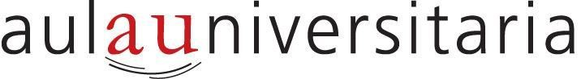

Cosa de grandes • Programa 2026

aulauniversitaria
Programa de actividades y formación continua para personas de más de 50 años junto a la Universidad Blas Pascal. Talleres de idiomas, arte, filosofía, tecnología, salud mental y actividades recreativas.
- ✓ 47 propuestas en 2026
- ✓ 28 docentes especialistas
- ✓ Campus UBP y Virtual
- ✓ La 1ª clase es gratis
- ✓ Inscripción todo el año